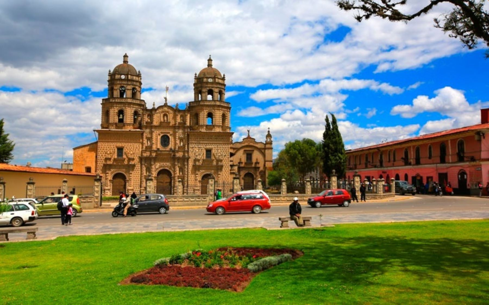
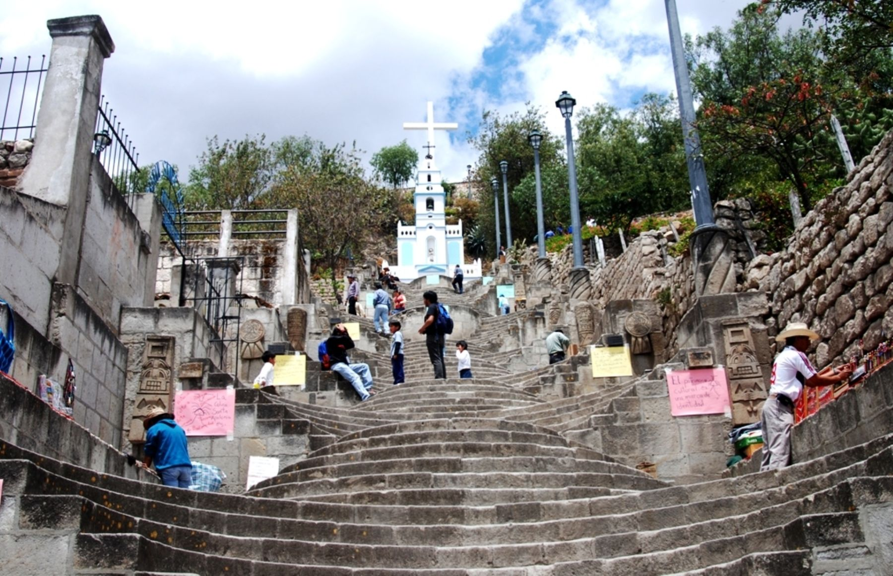
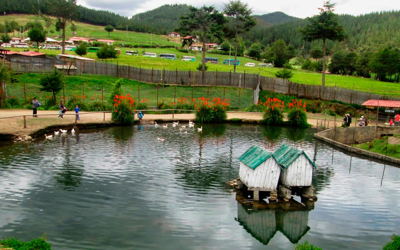
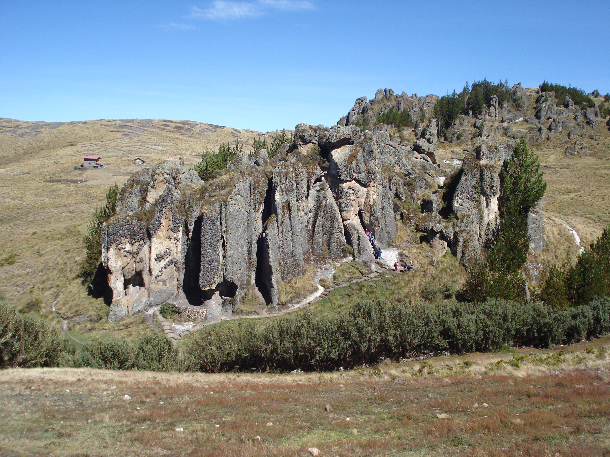

-

Plaza de Armas
-

Santa Apolonia
-

Complejo Turistico Granja Porcón
-

Complejo Turístico Baños del Inca
-

Complejo Arqueológico de Cumbemayo
Mas informacion ...
Plaza de Armas
Toda la cultura e historia de la bella Cajamarca reunidas en esta plaza de armas, excelente lugar para contemplar todo el esplendor de los alrededores y relajarse un rato en plena ciudad. Muy seguro limpio y ordenadoVideo Promocional
Mirador del cerro Santa Apolonia
Su nombre original fue rumitiana o rumipascana que en quechua significa “Asiento de Piedra”. Formación rocosa de origen volcánico. Ubicado en la parte alta a inmediaciones de la Plaza de Armas, constituye un elemento plenamente integrado al espacio y paisaje urbano. Los colonos la llamaron en un inicio San Francisco de Monte Alberna. Después llevó el nombre con el que actualmente se le conoce como Santa Apolonia por haber sido sede de una capilla en honor a la Santa del mismo nombre.Video Promocional
Cumbe Mayo
Está ubicado a 20 Km. al oeste de la ciudad de Cajamarca. A una altura de 3 500 m.s.n.m. Su nombre deriva de Cumbe: Fino y Mayo: Río Lo que en quechua quiere decir “río fino”. Cumbe Mayo está rodeado por un fantástico bosque de piedras que parece reproducir la silueta de piadosos frailes por lo que familiarmente se les denomina “frailones”.Video Promocional
Porcon - Cajamarca
El pueblo de Granja Porcón vive una vida aparte de la locura de la ciudad. Le gusta mostrar a sus visitantes la paz y la tranquilidad que vienen de su vida simple, los cuales traen consigo el poder de sanar su alma.Video Promocional
Baños del Inca
A 15 minutos de la ciudad de Cajamarca, se encuentran los Baños del Inca. Lleva este nombre porque sus aguas termales, de origen volcánico, eran visitadas por el inca Atahualpa para relajarse y recuperar fuerzas. En la actualidad, es un balneario medicinal que atrae a turistas nacionales e internacionales. Sus aguas alcanzan temperaturas de 72 °C (158 °F) y contienen sodio, hierro, magnesio, potasio, calcio, litio, estroncio y sílice. Por estas propiedades químicas ayudan al tratamiento de enfermedades reumáticas, bronquiales, nerviosas y de la piel. Asimismo, los Baños del Inca ofrecen el servicio de pozas colectivas, pozas individuales, piscinas al aire libre, servicios de masajes, baños sauna que incluyen tratamientos con eucalipto, entre otros. Relajarse en estas aguas terapéuticas es un placer inolvidable.